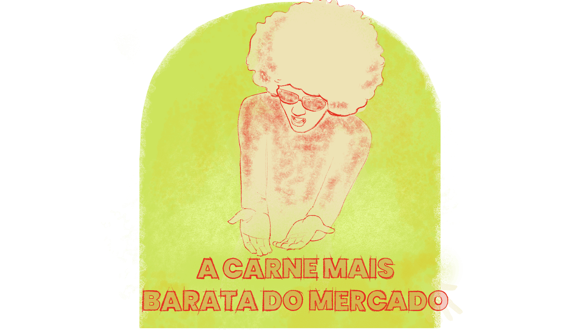

CAPÍTULO 1
A Educação Profissional e Tecnológica: entre a igualdade de direitos e o direito à diferença
O papel do direito à diferença na defesa dos direitos humanos
A luta dos trabalhadores e seus projetos de emancipação atravessam muitas camadas de negação de direitos fundamentais a diversos grupos específicos. Historicamente, os direitos fundamentais (civis, políticos e sociais) foram disputados na luta popular pela superação de uma visão que fosse além da legislação ou da jurisprudência , mas que se materializasse como direito à existência em suas dimensões políticas, econômicas e culturais. Essa disputa é travada diretamente entre quem entende os direitos como aspecto individual, pautado nos, e entre quem os defende como constituídos em coletividades, nas interações dos grupos sociais, sendo dependentes deste processo para sua consolidação.
A construção de uma compreensão de direitos humanos como direitos universais, intocáveis e irrestritos a qualquer pessoa firmou-se como pauta de reconhecimento global nos anos 1950 e 1960 e foram reafirmados para todos os povos e grupos do mundo. Tal percepção ganhou sua materialidade na Declaração Universal dos Direitos Humanos (1948), na qual foi estabelecido, pela primeira vez na história, que todos os seres humanos – sem exceção nem distinção de classe, raça, sexo, língua ou religião – devem ter a sua dignidade e os seus direitos fundamentais garantidos.
.png)
Título: A conquista dos direitos humanos fundamentais
Fonte: FDR Presidential Library & Museum (2018).
Elaboração: Prosa (2025b).
Apesar da existência desse movimento, pautado na defesa de direitos humanos, ainda nos deparamos com diversos casos em que a dignidade da pessoa humana é violada, quando posta em situações de trabalho análogo à escravidão, trabalho infantil, cárcere em massa da juventude negra, casos de feminicídio e transfobia, entre outras. Mas já parou para pensar que a maioria das pessoas vitimadas por essas violências tem uma etnia, um gênero, um modo de expressar sua sexualidade, uma classe social?
Marcadores de etnia, sexo, condições físicas e cognitivas e os modos de organização cultural de povos e grupos são utilizados como formas de negação de direitos, bem como para justificar a desumanização dessas pessoas – inclusive, por meio da exploração do seu trabalho. Assim, nem todos os seres humanos são percebidos como portadores desses direitos universais. A diversidade constituinte do gênero humano, que nos diferencia e nos singulariza, é usada como marcador de opressão, de exclusão e de desumanização.
É preciso termos uma compreensão de que a defesa dos direitos humanos exige a discussão da diversidade, do direito à diferença. Não basta defendermos que todos somos iguais se as diferenças não permitem que todos sejam tratados igualmente. O que se pauta hoje não é apenas o direito à igualdade, mas o direito a ser diferente e ter sua diferença protegida para que sua humanidade seja preservada. Isso significa que, de acordo com Boaventura Santos (2003, p. 56), a equidade não se limita a tratar todos da mesma forma, mas exige um olhar atento para as circunstâncias em que a igualdade pode apagar identidades ou, ao contrário, em que a diferença pode ser usada como justificativa para inferiorizar grupos, o que ele caracteriza como o direito de ser iguais quando a diferença inferioriza as pessoas, e de ser diferentes quando a descaracterização vem pela igualdade. Nesse sentido, a construção de uma sociedade verdadeiramente inclusiva depende de uma igualdade que reconheça e respeite as diferenças, ao mesmo tempo em que impede que essas diferenças sejam convertidas em desigualdades.
(2012, p. 719) colabora com esse debate ao defender que precisamos de um projeto educacional que assegure a igualdade na diferença, pois a questão dos direitos humanos está justamente na necessidade de equilibrar a promoção da igualdade com o reconhecimento da diversidade. Para a autora, enfrentar esse desafio significa não apenas reduzir desigualdades, mas também valorizar as diferenças e garantir o respeito às identidades. Esse processo é fundamental para a efetivação do direito à educação e para a consolidação de uma educação em direitos humanos que considere essas inter-relações.
Nesse sentido, o que se exige é a ampliação de direitos para esferas socioeconômicas, ambientais e culturais. Ou seja, exige-se um projeto de direitos humanos que supere as desigualdades impostas às classes trabalhadoras, que sofrem diversas camadas de opressão, como a do sexismo e do machismo, do racismo, da xenofobia, do capacitismo, entre outras. A, conceito que explica como essas opressões se sobrepõem e se intensificam, permite compreender de que maneira a negação de direitos se agrava quando múltiplas formas de discriminação recaem sobre um mesmo indivíduo. Essa dinâmica pode ser observada nos dados de 2024 do Instituto de Pesquisa Econômica Aplicada (IPEA), que mostram, por exemplo, que as mulheres enfrentam maior carga horária de trabalho e menores rendimentos e, entre elas, as mulheres negras estão em uma posição ainda mais vulnerável, compondo a camada que tem menor renda e direitos previdenciários mais limitados. Outro exemplo é em relação ao ingresso de pessoas negras ao Ensino Superior: apesar de haver um aumento significativo de acesso da população negra à universidade, os patamares atingidos atualmente já eram alcançados por pessoas brancas em 1995.
.png)
.png)
Título: A interseccionalidade nos dados de renda
Fonte: IPEA (2024).
Elaboração: Prosa (2025e).
O termo interseccionalidade foi cunhado inicialmente pela estudiosa americana do feminismo negro Kimberlé Williams Crenshaw, em 1989. No Brasil, ele ganhou força pelos estudos da Carla Akotirene, tendo destaque seu livro Interseccionalidade (2019). Nesta obra, a autora afirma que
A interseccionalidade visa dar instrumentalidade teórico-metodológica à inseparabilidade estrutural do racismo, capitalismo e cisheteropatriarcado – produtores de avenidas identitárias em que mulheres negras são repetidas vezes atingidas pelo cruzamento e sobreposição de gênero, raça e classe, modernos aparatos coloniais
A relevância desse olhar interseccional se expande nos diversos campos em que camadas de opressão se sobrepõem aos sujeitos. Assim, como contribuição teórica, o nos orienta a perceber, por exemplo, como pessoas negras com deficiência têm menos acesso à escola ou como mulheres transgêneros enfrentam maior dificuldade quanto a terem seus direitos respeitados.
Para refletir: diferenças e desigualdades na escola
Chegamos ao primeiro momento reflexivo deste capítulo!
A escola é um espaço habitado por sujeitos múltiplos, diversos, diferentes. Mas você já parou para pensar por que algumas diferenças são mais visíveis e acabam se tornando marcadores de desigualdade? Se a diversidade é parte essencial da constituição dos seres humanos, o que faz com que algumas diferenças sejam mais "diferentes" do que outras? E de que maneira essas diferenças podem tornar-se promotoras de desigualdades?
Agora, olhe para seu contexto escolar: entre aqueles que enfrentam dificuldades na aprendizagem, que correm risco de evasão ou que já abandonaram os estudos, há uma predominância de determinada etnia, gênero, sexualidade ou deficiência? Se você realizasse um diagnóstico cruzando esses marcadores com os dados de desempenho escolar, que perfis se destacariam? Será que as camadas de opressão estão impactando o desenvolvimento educacional de algum grupo específico de estudantes?
Diante desse diagnóstico, quais espaços sua escola já possui ou poderia criar para visibilizar essas questões e propor ações concretas? Existem Núcleos, Grupos de Trabalho ou de Discussão voltados para etnia, gênero, sexualidade e deficiência? Se não existem, como poderiam ser implantados para garantir políticas de atenção às diferenças e à promoção da equidade?
Quando os marcadores de diferenças incidem sob um mesmo corpo, uma mesma história, uma mesma carne, ela fica mais “barata”, mais vulnerável, mais descartável.

Título: A carne mais barata do mercado
Fonte: Elza Soares (2002).
Elaboração: Prosa (2025f).
Lembre-se de registrar suas reflexões no Memorial e/ou de seguir as orientações do seu tutor sobre essa atividade.